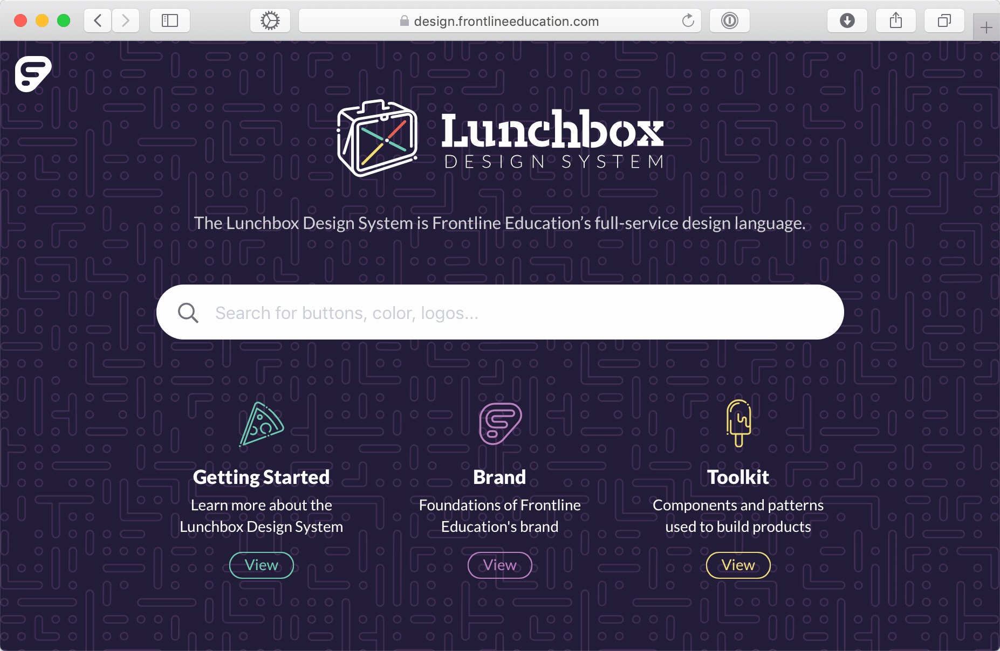
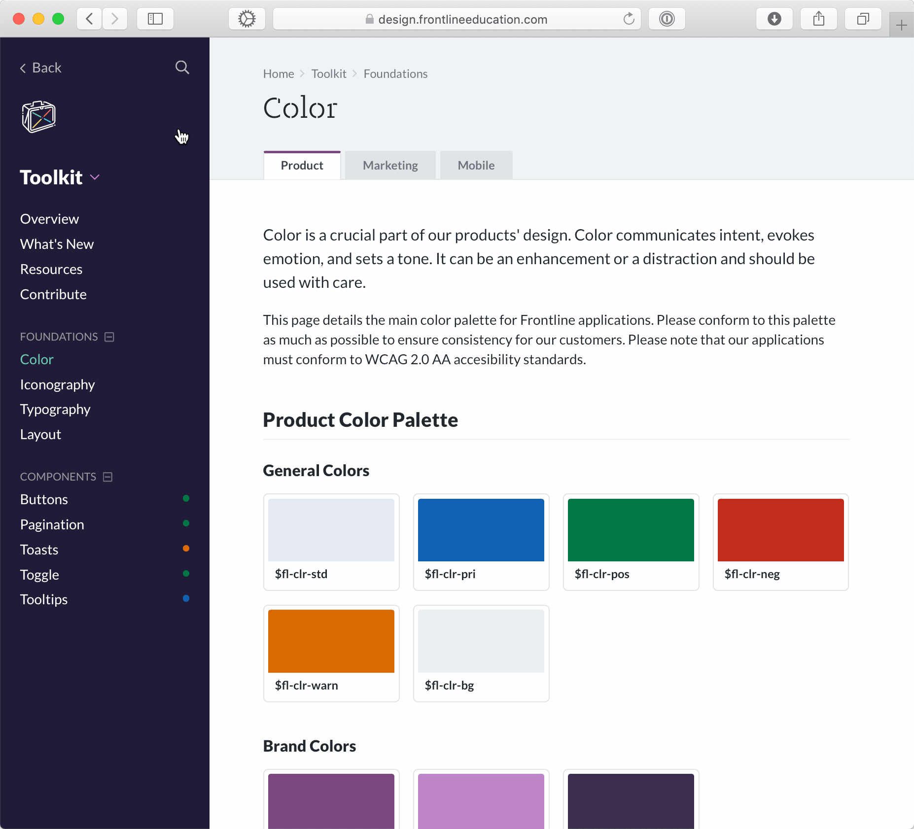

Background
Frontline Education is a fast-paced growth organization building a suite of human capital management solutions for educational institutions. A combination of in-house development and M&A has led to Frontline being the leader in this category. Hybrid organizations like Frontline quickly become a hodge-podge of technologies, interfaces, and experiences.

At the speed and scale that Frontline has grown, the need for a design system is more important than ever. A shared design language will minimize the amount of time designers and developers spend on trivial interface decisions, allowing for more time and effort to be applied to high-impact problem solving.
What We Did
A major part of that initiative was establishing a new site for the system to live. The existing style guide, while a good start, was difficult to access and required code-knowledge to edit basic content. Because of this, no one used it and many didn't even know it existed. I had the opportunity to work closely with fellow designers Tory Martin and Jon Pope on the planning, designing, and building of the Lunchbox Design System site.
We looked closely why the existing style guide had failed and, based on our findings, set three primary goals for the new site:
- The site must be easy to access and easy to use
- The content of the site must be easy to edit by anyone, especially non-developers
- The site must unifiy the (historically siloed) product & marketing patterns and guidelines to provide a "one-stop-shop" for all Frontline Education design & devlopment standards.

My Role
Vision & Planning
I was given the opportunity to lead Frontline's design system initiative. For this project, my role consisted primarily of vision-casting, project planning, and UI design of the Lunchbox site. I worked closely with representitives from UX, Marketing, Development, and Product management to establish project goals and set release targets.
Design & Development
I was the primary UI designer on the site, with a lot of input from User Experience and Marketing team members. I've got to give credit to Tory Martin. He did the vast majority of architecture and development for the site.
